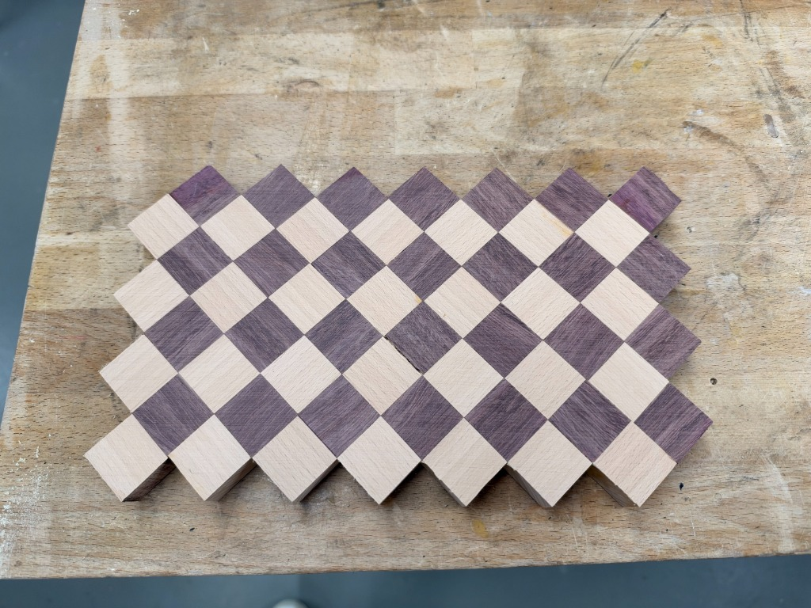
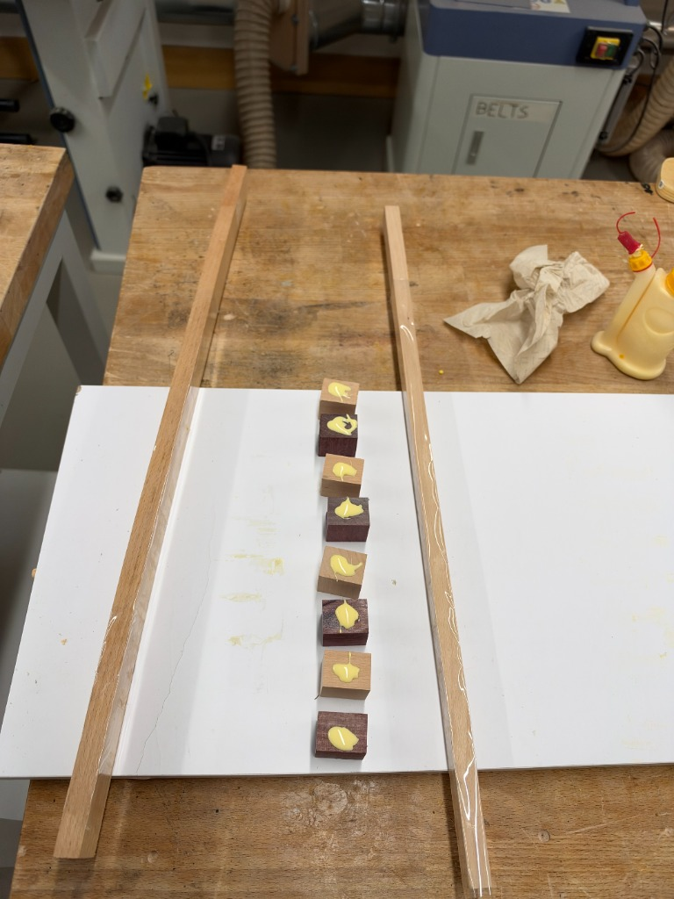
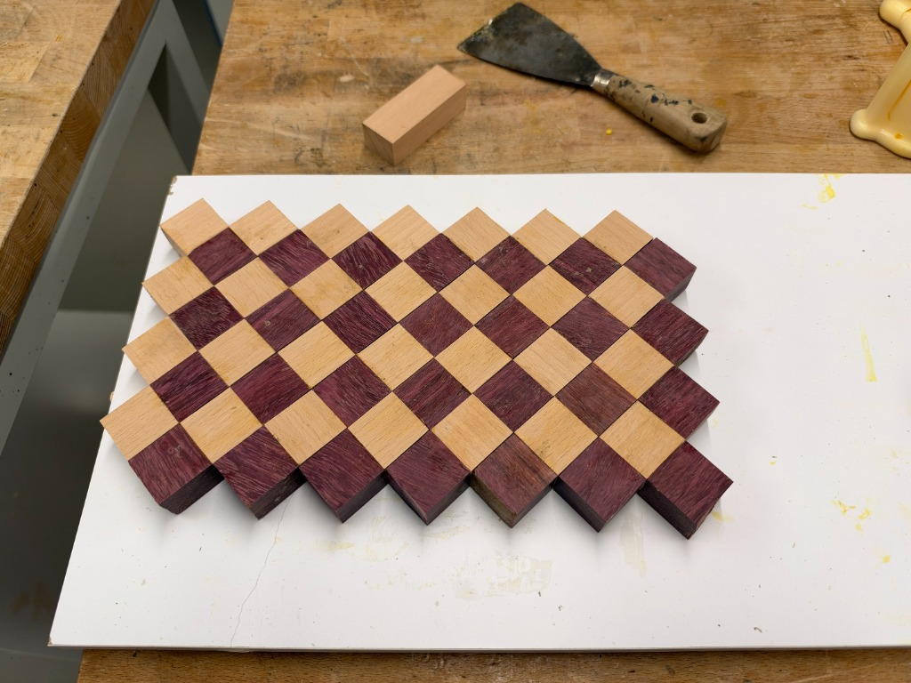
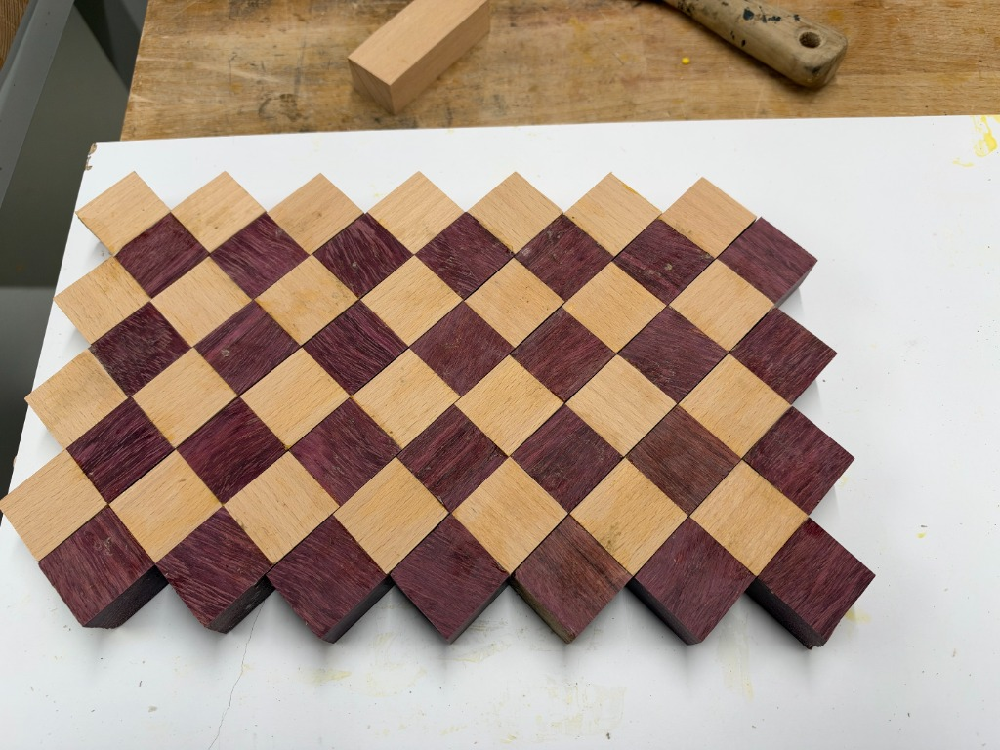
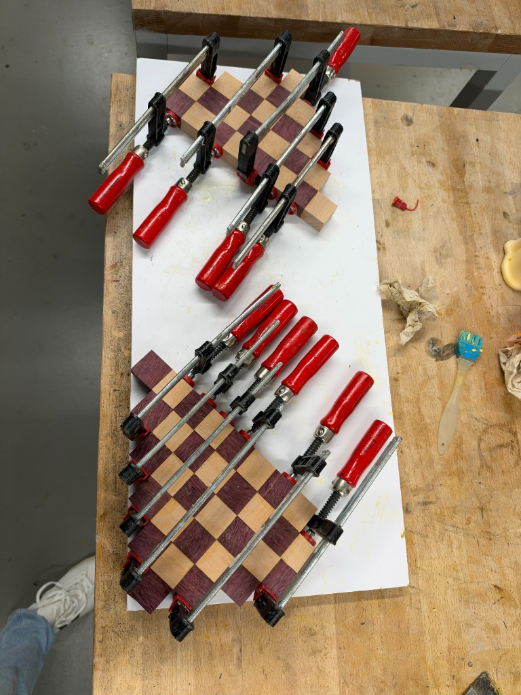

A step-by-step documentation of constructing a 19 cm × 28 cm × 2 cm diagonal diamond checkerboard cutting board. Explores timber behavior, sub-assembly clamping strategies, surfacing, and the dramatic oil reveal.
Project Specifications & Parameters
Final Dimensions
19.0 cm width × 28.0 cm length × 2.0 cm thickness (sanded down from 22 mm)
30 mm × 30 mm × 22 mm (planed to 30mm × 22mm, cut to 30mm on miter saw)
Wood Species
European Beech (Fagus sylvatica) & Tropical Purpleheart (Peltogyne spp.)
Adhesive
Titebond III Ultimate (waterproof, aliphatic resin, FDA-compliant for indirect food contact)
Machinery & Jigs
Planer (30×22mm), miter saw with stop block, melamine caul guides with packing tape
Sanding Schedule
Random orbital sanding through 80 → 120 → 180 → 240 (water popped) → 320 grit
Finish & Sealing
USP food-grade mineral oil deep saturation bath followed by organic beeswax board butter
Workshop Location
Zürich, Switzerland
Interactive Material Transformation
Raw Sanded Wood vs. Mineral Oil Finish
Drag the center handle to see how the first application of food-grade oil awakens the muted dry grain into deep royal purple and golden amber.

Raw Sanded (320 Grit)Mineral Oil & Beeswax
Process Documentation
The Complete Workshop Build Log
A sequential journey through material preparation, sub-assemblies, clamping challenges, and finishing.
Step 01Milling & Precision Batching
Planer Preparation & Miter Saw Batching
The foundation of this geometric cutting board began at the planer, where the European Beech and Purpleheart wood pieces were carefully planed down to a precise cross-section of 30 mm × 22 mm, establishing flat, parallel reference faces and crisp 90-degree corners. Next, a miter saw equipped with a positive stop block was used to cross-cut uniform 30 mm pieces, resulting in consistent blocks measuring exactly 30 mm × 30 mm × 22 mm.
The 22 mm dimension served as the raw thickness: having an extra 2 mm of thickness allowance was an intentional decision, allowing the subsequent post-glueup flattening and extensive sanding steps to bring the entire board down to its final, dead-flat 20 mm (2.0 cm) finished thickness.
Cut cubes arranged on the workbench before sorting and strip alignment.Click to enlarge
Woodworker's Insight: Grain Direction & Tear-Out
Purpleheart is notoriously dense (2,520 Janka) with brittle interlocked fibers that love to chip out at the exit of a saw cut. Using a dedicated high-tooth crosscut blade (80-tooth Hi-ATB) backed by a sacrificial wooden sled fence is mandatory to prevent fraying and edge chipping.
Step 02Sub-Assembly Preparation
Linear Strip Layout & Caul Setup
Attempting to glue dozens of individual blocks simultaneously in a 2D matrix is a recipe for disaster: glue dries too fast, parts skate out of position, and clamping pressure distributes unevenly. The solution is to first build intermediate linear strips. Two wooden guide cauls were wrapped in standard polypropylene packing tape (wood glue does not adhere to packing tape) and affixed to a flat white melamine board. The blocks were laid out in alternating patterns with glue beads applied.

Melamine alignment jig with taped cauls ensuring straightness along the linear axis.Click to enlarge
Step 03Glue Wetting & Lamination
Even Glue Spreading with Silicone Brushes
End-grain and cross-grain joints absorb glue rapidly through capillary action. If adhesive is only dotted on, the end fibers will suck up the moisture and create a starved joint prone to splitting later. A flexible silicone glue brush was used to spread an even, full-coverage film across all meeting faces of the Beech and Purpleheart blocks before applying axial pressure.
Silicone brush and glue bottle setup alongside cured and curing linear stick sections.Click to enlarge
Controlled adhesive volume minimizes excessive squeeze-out while ensuring complete fiber bond.Click to enlarge
Step 04Dry Fit & Pattern Validation
Mapping the 45° Diamond Grid Matrix
Once the individual linear strips cured and were lightly scraped of glue beads, they were shifted by one unit relative to each other to generate the diagonal 45-degree diamond checkerboard pattern. A full dry fit was executed on the flat melamine board. Pencil reference arrows were drawn across the back and faces to index each strip’s exact position and prevent accidental flips during the final high-stress glue-up.

Dry fitting the stepped diamond pattern. Notice the stepped perimeter before squaring.Click to enlarge

Full checkerboard layout on melamine. Raw purpleheart exhibits its natural light lavender-plum hue.Click to enlarge
Step 05Solving Clamping Creep
Sectional Sub-Assemblies & Diagonal Clamping
Clamping a stepped diagonal matrix is one of the most frustrating challenges in fine woodworking. Because the joints run at 45 degrees to the edges, applying clamp pressure directly along the length creates a shear vector that forces the strips to slide and skate out of square. To conquer this, the board was glued in two distinct triangular/chevron halves first.
Staged clamping: Two sub-assemblies clamped independently under heavy F-clamps.Click to enlarge

Parallel clamping forces applied perpendicularly across the seam interfaces.Click to enlarge
Hybrid clamping: Steel F-clamps provide primary compression while quick-grips maintain lateral alignment.Click to enlarge
Step 06Final Glue-Up
The Master Glue-Up & Full Matrix Compression
With the sub-sections flat and cured, the center diagonal seam was freshly jointed and the entire matrix was brought together in the master glue-up. Four heavy parallel bar clamps provided the main compression across the diagonal axis, while opposed clamps prevented the slab from bowing or potato-chipping under intense tension.
Master glue-up: Comprehensive clamp pressure along the 45-degree axes.Click to enlarge
Tackling Glue Squeeze-Out
Do not wipe wet glue with a wet sponge on end grain — doing so drives watered-down adhesive deep into the open vascular pores, leaving permanent pale blotches that block oil absorption later. Instead, wait 20 minutes until the squeeze-out turns to a rubbery gelatin consistency, then pare it away effortlessly with a sharp card scraper or chisel.
Step 07Surfacing, Squaring & Sanding
Squaring the 19cm × 28cm Perimeter & Sanding
Once the assembly cured for 24 hours, the stepped sawtooth edges were marked with an engineering square and layout ruler, then trimmed square using a track saw with an ultra-fine blade to achieve the final 19.0 cm × 28.0 cm perimeter. The board had started from initial 22 mm thick blocks; through careful leveling and progressive random orbital sanding across both faces (80 → 120 → 180 → 240 grit), the surface was flattened down to its final uniform 20 mm (2.0 cm) thickness. At 240 grit, the board was lightly misted with warm water (“water-popping”) to raise compressed fibers, allowed to dry, and final-sanded with 320 grit until like polished stone.
Checking 90-degree squareness and preparing perimeter reference cuts with precision layout tools.Click to enlarge
The trimmed and sanded slab in raw wood state (320 grit). Silky smooth to touch, waiting for oil.Click to enlarge
Step 08The Climax: Oil Saturation
The Oil Pop: Awakening the Grain
The ultimate reward of working with exotic timbers: applying food-safe pure mineral oil. The thirsty end-grain pores act like bundles of capillaries, drawing the oil deep into the cellular matrix. Instantly, the light lavender purpleheart combusts into a regal, saturated magenta-violet, while the pale European Beech turns a deep, honey-golden amber. Two flooding coats of mineral oil were applied until refusal, followed by a buffed layer of homemade beeswax and mineral oil board butter to seal the surface with a silky satin sheen.
The finished board resting on the workbench: Rich purpleheart and radiant beech end-grain grid.Click to enlarge
Workshop Archive
Complete 13-Photo Build Gallery
Click on any photo to open the high-resolution lightbox view and inspect the joint details.
01 • Raw Cut Blocks
02 • Caul Setup
03 • Glue Spreading
04 • Wetting the Joints
05 • Dry Fit Check
06 • Pattern Layout
07 • Sub-Assembly Clamps
08 • Dual Section Press
09 • Multi-Clamp Array
10 • Master Clamp-Up
11 • Precision Squaring
12 • Sanded 320 Grit
13 • Final Oil Finish
Culinary Heirloom
Care & Maintenance Protocol
How to care for an end-grain cutting board so it lasts generations.
What To Do
Hand wash both sides with mild dish soap and warm water immediately after use.
Towel dry thoroughly and stand on edge to air dry evenly on all sides.
Apply food-grade mineral oil once a month or whenever the wood feels dry or looks pale.
Reapply beeswax board butter every 3–4 months for moisture repelling protection.
What Never To Do
Never put in the dishwasher: Extreme heat and steam will dissolve the glue and warp the timber.
Never soak or submerge in the sink.
Never dry flat on a countertop (trapped moisture underneath causes cupping).
Never use vegetable or olive oils (they turn rancid and harbor odor).